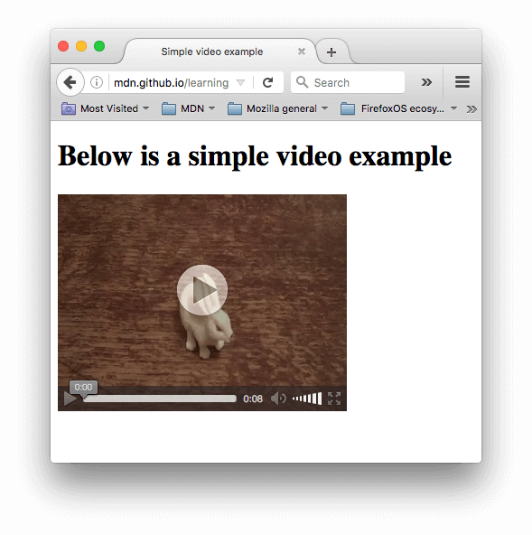
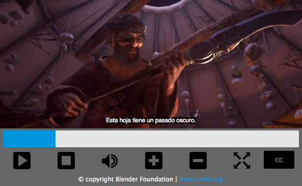

{kind=link}

Now that we are comfortable with adding simple images to a webpage, the next step is to start adding video and audio players to your HTML documents! In this article we'll look at doing just that with the {{htmlelement("video")}} and {{htmlelement("audio")}} elements; we'll then finish off by looking at how to add captions/subtitles to your videos.
| Prerequisites: | Basic computer literacy, basic software installed, basic knowledge of working with files, familiarity with HTML fundamentals (as covered in Getting started with HTML) and Images in HTML. |
|---|---|
| Objective: | To learn how to embed video and audio content into a webpage, and add captions/subtitles to video. |
Web developers have wanted to use video and audio on the Web for a long time, ever since the early 2000s when we started to have bandwidth fast enough to support any kind of video (video files are much larger than text or even images.) In the early days, native web technologies such as HTML didn't have the ability to embed video and audio on the Web, so proprietary (or plugin-based) technologies like Flash — and later, Silverlight (both of which are now obsolete) — became popular for handling such content. This kind of technology worked ok, but it had a number of problems, including not working well with HTML/CSS features, security issues, and accessibility issues.
A native solution would solve much of this if implemented correctly. Fortunately, a few years later the {{glossary("HTML5")}} specification had such features added, with the {{htmlelement("video")}} and {{htmlelement("audio")}} elements, and some shiny new {{Glossary("JavaScript")}} {{Glossary("API","APIs")}} for controlling them. We'll not be looking at JavaScript here — just the basic foundations that can be achieved with HTML.
We won't be teaching you how to produce audio and video files — that requires a completely different skillset. We have provided you with sample audio and video files and example code for your own experimentation, in case you are unable to get hold of your own.
Before you begin here, you should also know that there are quite a few OVPs (online video providers) like YouTube, Dailymotion, and Vimeo, and online audio providers like Soundcloud. Such companies offer a convenient, easy way to host and consume videos, so you don't have to worry about the enormous bandwidth consumption. OVPs even usually offer ready-made code for embedding video/audio in your webpages; if you use that route, you can avoid some of the difficulties we discuss in this article. We'll be discussing this kind of service a bit more in the next article.
The {{htmlelement("video")}} element allows you to embed a video very easily. A really simple example looks like this:
<video src="rabbit320.webm" controls> <p>Your browser doesn't support HTML5 video. Here is a <a href="rabbit320.webm">link to the video</a> instead.</p> </video>
The features of note are:
src (source) attribute contains a path to the video you want to embed. It works in exactly the same way.controls attribute to include the browser's own control interface, or build your interface using the appropriate JavaScript API. At a minimum, the interface must include a way to start and stop the media, and to adjust the volume.<video> tags<video> element, allowing us to provide a fallback for older browsers. This can be anything you like; in this case, we've provided a direct link to the video file, so the user can at least access it some way regardless of what browser they are using.The embedded video will look something like this:

You can try the example live here (see also the source code.)
There's a problem with the above example, which you may have noticed already if you've tried to access the live link above with an older browser like Internet Explorer or even an older version of Safari. The video won't play, because different browsers support different video (and audio) formats. Fortunately, there are things you can do to help prevent this from being a problem.
First, let's go through the terminology quickly. Formats like MP3, MP4 and WebM are called container formats. They define a structure in which the audio and/or video tracks that make up the media are stored, along with metadata describing the media, what codecs are used to encode its channels, and so forth.
A WebM file containing a movie which has a main video track and one alternate angle track, plus audio for both English and Spanish, in addition to audio for an English commentary track can be conceptualized as shown in the diagram below. Also included are text tracks containing closed captions for the feature film, Spanish subtitles for the film, and English captions for the commentary.
The audio and video tracks within the container hold data in the appropriate format for the codec used to encode that media. Different formats are used for audio tracks versus video tracks. Each audio track is encoded using an audio codec, while video tracks are encoded using (as you probably have guessed) a video codec. As we talked about before, different browsers support different video and audio formats, and different container formats (like MP3, MP4, and WebM, which in turn can contain different types of video and audio).
For example:
There are some special cases. For example, for some types of audio, a codec's data is often stored without a container, or with a simplified container. One such instance is the FLAC codec, which is stored most commonly in FLAC files, which are just raw FLAC tracks.
Another such situation is the always-popular MP3 file. An "MP3 file" is actually an MPEG-1 Audio Layer III (MP3) audio track stored within an MPEG or MPEG-2 container. This is especially interesting since while most browsers don't support using MPEG media in the {{HTMLElement("video")}} and {{HTMLElement("audio")}} elements, they may still support MP3 due to its popularity.
An audio player will tend to play an audio track directly, e.g. an MP3 or Ogg file. These don't need containers.
Why do we have this problem? It turns out that several popular formats, such as MP3 and MP4/H.264, are excellent but are encumbered by patents; that is, there are patents covering some or all of the technology that they're based upon. In the United States, patents covered MP3 until 2017, and H.264 is encumbered by patents through at least 2027.
Because of those patents, browsers that wish to implement support for those codecs must pay typically enormous license fees. In addition, some people prefer to avoid restricted software and prefer to use only open formats. Due to these legal and preferential reasons, web developers find themselves having to support multiple formats to capture their entire audience.
The codecs described in the previous section exist to compress video and audio into manageable files, since raw audio and video are both exceedingly large. Each web browser supports an assortment of {{Glossary("Codec","codecs")}}, like Vorbis or H.264, which are used to convert the compressed audio and video into binary data and back. Each codec offers its own advantages and drawbacks, and each container may also offer its own positive and negative features affecting your decisions about which to use.
Things become slightly more complicated because not only does each browser support a different set of container file formats, they also each support a different selection of codecs. In order to maximize the likelihood that your web site or app will work on a user's browser, you may need to provide each media file you use in multiple formats. If your site and the user's browser don't share a media format in common, your media won't play.
Due to the intricacies of ensuring your app's media is viewable across every combination of browsers, platforms, and devices you wish to reach, choosing the best combination of codecs and container can be a complicated task. See {{SectionOnPage("/en-US/docs/Web/Media/Formats/Containers", "Choosing the right container")}} for help selecting the container file format best suited for your needs; similarly, see {{SectionOnPage("/en-US/docs/Web/Media/Formats/Video_codecs", "Choosing a video codec")}} and {{SectionOnPage("/en-US/docs/Web/Media/Formats/Audio_codecs", "Choosing an audio codec")}} for help selecting the first media codecs to use for your content and your target audience.
One additional thing to keep in mind: mobile browsers may support additional formats not supported by their desktop equivalents, just like they may not support all the same formats the desktop version does. On top of that, both desktop and mobile browsers may be designed to offload handling of media playback (either for all media or only for specific types it can't handle internally). This means media support is partly dependent on what software the user has installed.
So how do we do this? Take a look at the following updated example (try it live here, also):
<video controls> <source src="rabbit320.mp4" type="video/mp4"> <source src="rabbit320.webm" type="video/webm"> <p>Your browser doesn't support HTML5 video. Here is a <a href="rabbit320.mp4">link to the video</a> instead.</p> </video>
Here we've taken the src attribute out of the actual {{HTMLElement("video")}} tag, and instead included separate {{htmlelement("source")}} elements that point to their own sources. In this case the browser will go through the {{HTMLElement("source")}} elements and play the first one that it has the codec to support. Including WebM and MP4 sources should be enough to play your video on most platforms and browsers these days.
Each <source> element also has a {{htmlattrxref("type", "source")}} attribute. This is optional, but it is advised that you include it. The type attribute contains the {{glossary("MIME type")}} of the file specified by the <source>, and browsers can use the type to immediately skip videos they don't understand. Iftype isn't included, browsers will load and try to play each file until they find one that works, which obviously takes time and is an unnecessary use of resources.
Refer to our guide to media types and formats for help selecting the best containers and codecs for your needs, as well as to look up the right MIME types to specify for each.
There are a number of other features you can include when displaying an HTML video. Take a look at our next example:
<video controls width="400" height="400"
autoplay loop muted preload="auto"
poster="poster.png">
<source src="rabbit320.mp4" type="video/mp4">
<source src="rabbit320.webm" type="video/webm">
<p>Your browser doesn't support HTML video. Here is a <a href="rabbit320.mp4">link to the video</a> instead.</p>
</video>
The resulting UI looks something like this:
The new features are:
Used for buffering large files; it can take one of three values:
"none" does not buffer the file"auto" buffers the media file"metadata" buffers only the metadata for the fileYou can find the above example available to play live on Github (also see the source code.) Note that we haven't included the autoplay attribute in the live version — if the video starts to play as soon as the page loads, you don't get to see the poster!
The {{htmlelement("audio")}} element works just like the {{htmlelement("video")}} element, with a few small differences as outlined below. A typical example might look like so:
<audio controls> <source src="viper.mp3" type="audio/mp3"> <source src="viper.ogg" type="audio/ogg"> <p>Your browser doesn't support HTML5 audio. Here is a <a href="viper.mp3">link to the audio</a> instead.</p> </audio>
This produces something like the following in a browser:
You can run the audio demo live on Github (also see the audio player source code.)
This takes up less space than a video player, as there is no visual component — you just need to display controls to play the audio. Other differences from HTML video are as follows:
width/height attributes — again, there is no visual component, so there is nothing to assign a width or height to.poster attribute — again, no visual component.Other than this, <audio> supports all the same features as <video> — review the above sections for more information about them.
Now we'll discuss a slightly more advanced concept that is really useful to know about. Many people can't or don't want to hear the audio/video content they find on the Web, at least at certain times. For example:
Wouldn't it be nice to be able to provide these people with a transcript of the words being spoken in the audio/video? Well, thanks to HTML video, you can. To do so we use the WebVTT file format and the {{htmlelement("track")}} element.
"Transcribe" means "to write down spoken words as text." The resulting text is a "transcript."
WebVTT is a format for writing text files containing multiple strings of text along with metadata such as the time in the video at which each text string should be displayed, and even limited styling/positioning information. These text strings are called cues, and there are several kinds of cues which are used for different purposes. The most common cues are:
A typical WebVTT file will look something like this:
WEBVTT
1
00:00:22.230 --> 00:00:24.606
This is the first subtitle.
2
00:00:30.739 --> 00:00:34.074
This is the second.
...
To get this displayed along with the HTML media playback, you need to:
.vtt file in a sensible place..vtt file with the {{htmlelement("track")}} element. <track> should be placed within <audio> or <video>, but after all <source> elements. Use the {{htmlattrxref("kind","track")}} attribute to specify whether the cues are subtitles, captions, or descriptions. Further, use {{htmlattrxref("srclang","track")}} to tell the browser what language you have written the subtitles in. Finally, add {{htmlattrxref("label","track")}} to help readers identify the language they are searching for.Here's an example:
<video controls>
<source src="example.mp4" type="video/mp4">
<source src="example.webm" type="video/webm">
<track kind="subtitles" src="subtitles_es.vtt" srclang="es" label="Spanish">
</video>
This will result in a video that has subtitles displayed, kind of like this:

For more details, including on how to add labels please read Adding captions and subtitles to HTML5 video. You can find the example that goes along with this article on Github, written by Ian Devlin (see the source code too.) This example uses some JavaScript to allow users to choose between different subtitles. Note that to turn the subtitles on, you need to press the "CC" button and select an option — English, Deutsch, or Español.
Text tracks also help you with {{glossary("SEO")}}, since search engines especially thrive on text. Text tracks even allow search engines to link directly to a spot partway through the video.
For this active learning, we'd (ideally) like you to go out into the world and record some of your own video and audio — most phones these days allow you to record audio and video very easily and, provided you can transfer it on to your computer, you can use it. You may have to do some conversion to end up with a WebM and MP4 in the case of video, and an MP3 and Ogg in the case of audio, but there are enough programs out there to allow you to do this without too much trouble, such as Miro Video Converter and Audacity. We'd like you to have a go!
If you are unable to source any video or audio, then you can feel free to use our sample audio and video files to carry out this exercise. You can also use our sample code for reference.
We would like you to:
index.html.<video> element a poster that will be displayed before the video starts to be played. Have fun creating your own poster graphic.For an added bonus, you could try researching text tracks, and work out how to add some captions to your video.
You've reached the end of this article, but can you remember the most important information? You can find some further tests to verify that you've retained this information before you move on — see Test your skills: Multimedia and embedding. Note that the third assessment question in this test assumes knowledge of some of the techniques covered in the next article, so you may want to read that before attempting it.
And that's a wrap; we hope you had fun playing with video and audio in web pages! In the next article, we'll look at other ways of embedding content on the Web, using technologies like {{htmlelement("iframe")}} and {{htmlelement("object")}}.
{{PreviousMenuNext("Learn/HTML/Multimedia_and_embedding/Images_in_HTML", "Learn/HTML/Multimedia_and_embedding/Other_embedding_technologies", "Learn/HTML/Multimedia_and_embedding")}}